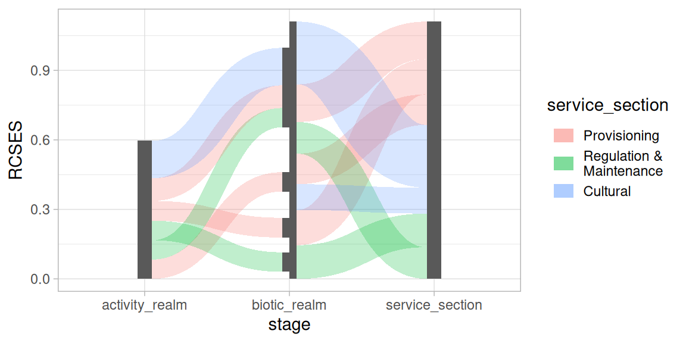
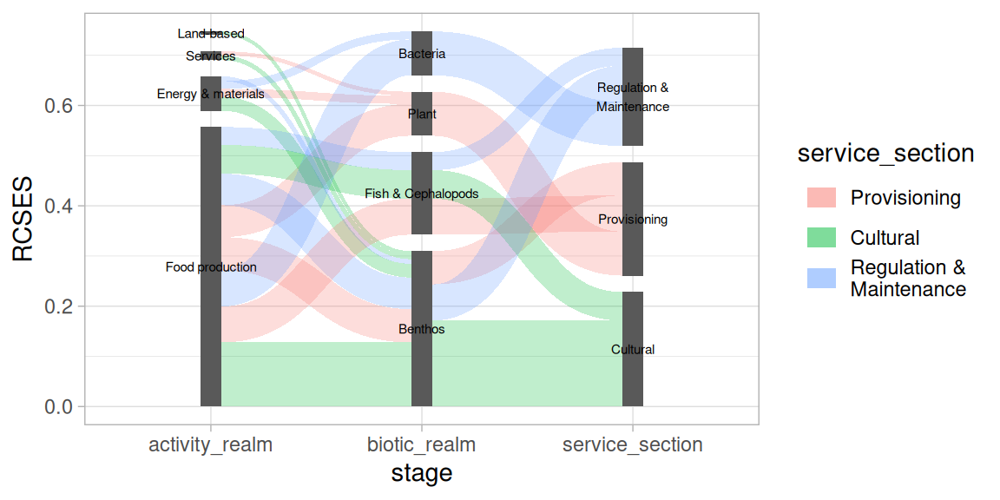

Using position_sankey
Positioning elements in a Sankey / alluvial diagram is controlled
with the position_sankey() function. It can be used to set
spacing between nodes (see Spacing); Apply
vertical alignment (see Alignment); Introduce a
split within a stage (see Splitting
nodes); Alter the stacking order (see Stacking order); Nudge positions (see Nudging).
In order to illustrate the positioning options,
?ecosystem_services data is used which comes packaged with
ggsankeyfier.
library(ggplot2)
library(ggsankeyfier)
theme_set(theme_light())
data("ecosystem_services")Please check vignette("data_management") if you wish to
understand how this data was pre-processed.
Spacing
There are three important parameters when setting up the spacing in a Sankey diagram:
-
width: which specifies the combined width of a node in a specific stage. When the nodes are split up, each half will have a width ofwidth / 2. -
h_space: is the horizontal space (specified in native units) between split nodes (measured from the center of each half). -
v_space: is the minimal vertical space between nodes measured in native units. Depending on the alignment of nodes this spacing might be stretched.
This is illustrated in the following example:
pos <- position_sankey(split_nodes = TRUE, align = "top",
width = 0.2, v_space = 0.15, h_space = 0.25)
serv_plot <-
ggplot(ecosystem_services_pivot1,
aes(x = stage, y = RCSES, group = node, connector = connector,
edge_id = edge_id)) +
geom_sankeyedge(position = pos) +
geom_sankeynode(position = pos)Alignment
Vertical alignment can be controlled with the align
argument. Alignment is explained with the plot shown below. There, two
red horizontal dashed guide lines are used to snap the different
alignment options.
When align = 'justified', nodes in each stage are spread
(by varying the vertical space) such that they line up with the top and
bottom guide lines. The minimum space between nodes is controlled with
v_space.
When align = 'top' or 'bottom', nodes are
aligned with the top or bottom guide line respectively, where the
v_space will be constant.
When align = 'center', nodes are centered around the
middle between the top and bottom guide lines, where
v_space will be constant.
When you are working with split_nodes = TRUE, alignment
will be a more tedious job.
Splitting nodes
When split_nodes = TRUE, a vertical split is introduced
for each node in a stage. This split can be useful when you wish to
emphasise transitions between stages. It can also be used to show an
imbalance when edges flowing from and to nodes are not equal. This
imbalance is shown in the example below, by selecting a subset of edges.
Note that a split is introduced automatically when edges flowing from
and to a node are not equal.
es_sub <- ecosystem_services_pivot2 |> subset(RCSES > quantile(RCSES, 0.9))
ggplot(es_sub,
aes(x = stage, y = RCSES, group = node, connector = connector, edge_id = edge_id)) +
geom_sankeyedge(aes(fill = service_section)) +
geom_sankeynode()
Stacking order
Another aspect you might want to control in a Sankey diagram is the
stacking order of the nodes and edges. When
order = "as_is", the nodes will be stacked in the order of
their levels (or order of appearance), the edges will be arranged in the
order of edge_id (or their order of appearance). Other
options are order = "ascending" and
order = "descending", both of which are based on the
y aesthetic.
In order to demonstrate the stacking order we reduce the number of records from the example data (i.e., only select the higher risk chains from the data). This will produce a less cluttered Sankey diagram.
es_sub <-
ecosystem_services |>
subset(RCSES > quantile(RCSES, 0.99)) |>
pivot_stages_longer(c("activity_realm", "biotic_realm", "service_section"),
"RCSES", "service_section")
p <- ggplot(es_sub,
aes(x = stage, y = RCSES, group = node, connector = connector,
edge_id = edge_id))This will plot the nodes and edges in ascending stacking order (largest at the top):
pos <- position_sankey(v_space = "auto", order = "ascending")
p + geom_sankeyedge(aes(fill = service_section), position = pos) +
geom_sankeynode(position = pos)This will plot the nodes and edges in desacending stacking order (largest at the bottom):
pos <- position_sankey(v_space = "auto", order = "descending")
p + geom_sankeyedge(aes(fill = service_section), position = pos) +
geom_sankeynode(position = pos)Nudging
The function position_sankey() can also be used to
position text labels. Let’s use it to add labels to the nodes. Note that
we are using a simple ggplot2::geom_text() layer, where we
provide "sankeynode" as stat function and the
pos object for positioning the labels.
pos <- position_sankey(v_space = "auto", order = "descending")
p + geom_sankeyedge(aes(fill = service_section), position = pos) +
geom_sankeynode(position = pos) +
geom_text(aes(label = node), stat = "sankeynode", position = pos, cex = 2)
Let’s say you want to place the text labels next to the nodes. In that case you need to nudge the calculated into the desired position. We also need to adjust the justification of the text labels and expand the x scales.
pos_text <- position_sankey(v_space = "auto", order = "descending", nudge_x = 0.1)
p + geom_sankeyedge(aes(fill = service_section), position = pos) +
geom_sankeynode(position = pos) +
geom_text(aes(label = node), stat = "sankeynode", position = pos_text, hjust = 0, cex = 2) +
scale_x_discrete(expand = expansion(add = c(0.2, .6)))